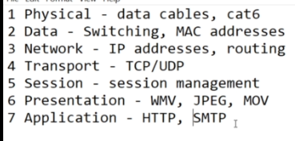

OSI Model or Whatnot Layers
Remember the mnemonics...
Please Do Not Throw Sausage Pizza Away
These are the layers.

When receiving data, data goes from layer 1 to layer 7, when sending data, data goes from layer 7 to layer 1